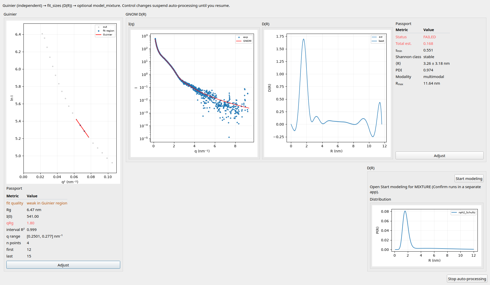
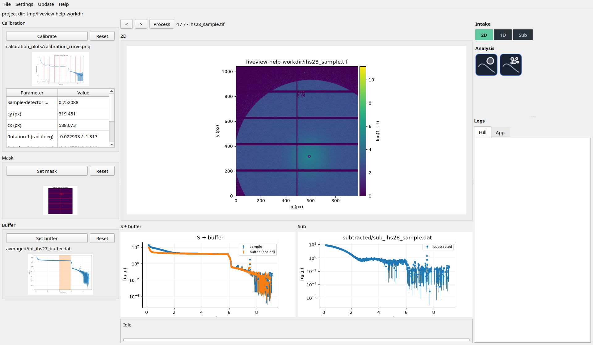

Open this window from the right-column polydisperse icon. While it stays open, new TIFFs run
Guinier → fit_sizes (D(R)) automatically. Closing the window disarms that chain.
Guinier here is independent of the monodisperse window and is stored under guinier_poly/.
Optional MIXTURE modeling is launched with Start modeling into a separate Distribution Modeling
app — press Confirm there to run.
Polydisperse Guinier quality is often poor; that is expected and does not feed fit_sizes.
Parameter edits (and confirming the D(R) Adjust wizard) pause auto-processing until you
Resume auto-processing (Ctrl+P; Ctrl+X stops auto).

Main window right → polydisperse icon → window opens (armed while open).

Click Adjust (or either embedded GNOM plot) → edit first / last / rmin / rmax / alpha and
boundary checkboxes in the wizard. Plots and passport update live; press Confirm to write
parameters and re-run fit_sizes (pinned Rmax refine). Opening the wizard alone does not pause the
queue — the first control change does. Use Restore auto to return to the last auto-fit snapshot.
Click a wizard plot to open an enlarged viewer (matplotlib toolbar + title-bar maximize).
Then Resume auto-processing when ready.
Under the mixture pane, choose MIXTURE (vs None) → set model / ranges as needed →
Start modeling → Distribution Modeling app opens → Confirm there to run
model_mixture. When that app is open and auto is on, finishing D(R) can prompt Confirm on the
modeling app. Use Re-run D(R) to re-fit sizes for the current profile (MIXTURE itself is Confirm-only
in Distribution Modeling).
In the Distribution Modeling app, after a successful MIXTURE run, click the Distribution plot to open the advanced MIXTURE viewer (model combo, mixture + component previews, BIC_χ²). Click the large plot there to enlarge further (title-bar maximize). Left-column component thumbnails select the large view only.
Stop auto-processing (Ctrl+X) → Resume auto-processing (Ctrl+P) when ready.
guinier_poly/<stem>/ — Guinier region YAMLfit_sizes/<stem>/ — GNOM .out, D(R) CSV, quality YAMLmixture/<stem>/ — per-model dirs, mixture_results.csv (when MIXTURE has run)